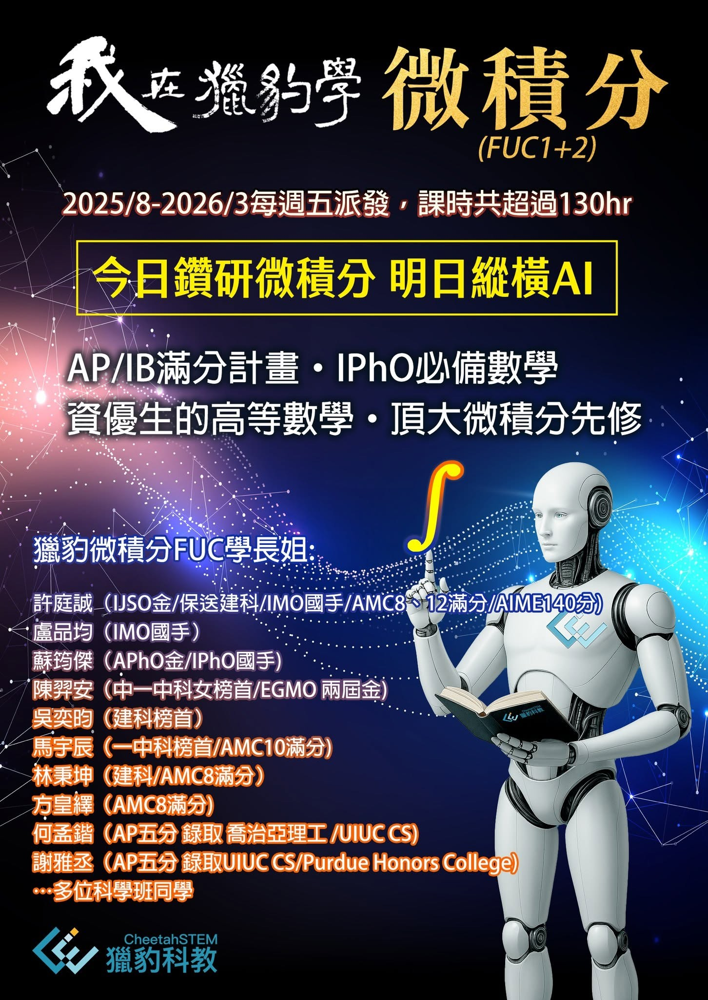
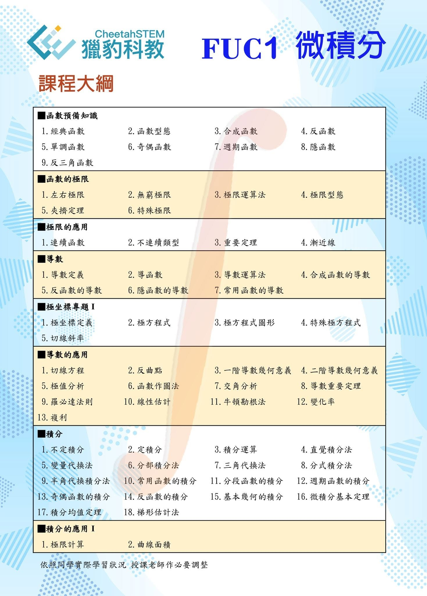
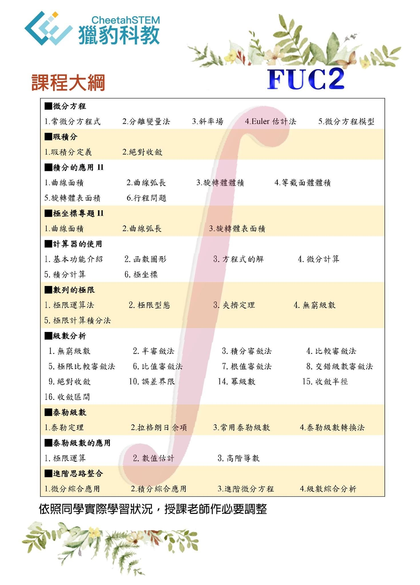
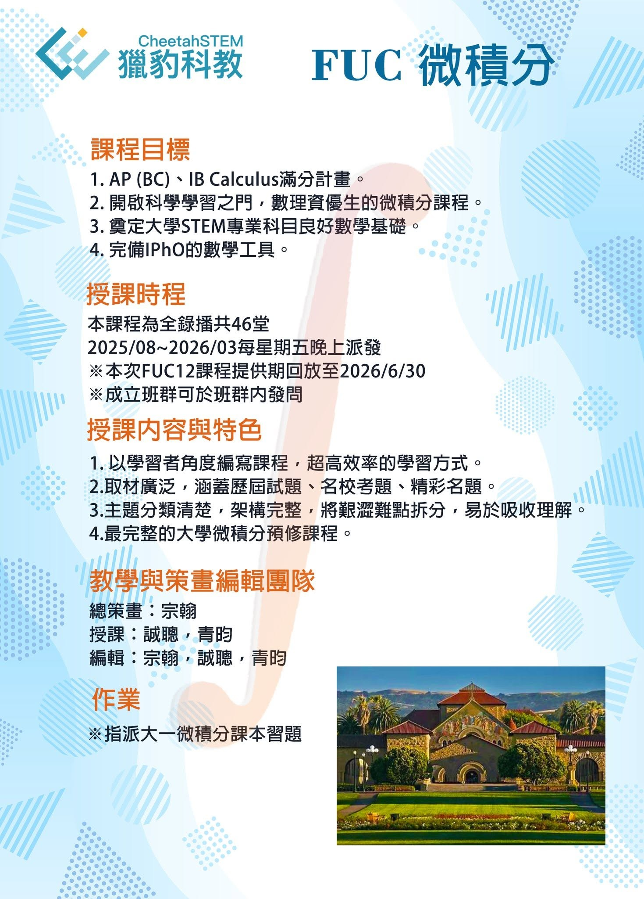

為何這些最頂尖的孩子都選修了『獵豹微積分課程』⁉️
常有家長詢問：獵豹的微積分課程對孩子的『學校成績、競賽、升學有幫助嗎？』 他們認為 『獵豹的微積分的知識邊界與訓練似乎超綱（台灣課綱）不少，因此對於只想聚焦學校段考、（數學）競賽、升學考試的學生，是否浪費了學習能量與寶貴時間？！』
我們直言這是缺乏遠見與認知高度的庸俗之見！
1. 許多人會納悶為何這些少數最頂尖的學生願意挑戰這個「困難/超綱」的課程？！ 其實答案或許是：他們的面對學習的態度/思維/選擇方式 使他們成為頂尖‼️ 大家都知道『要向成功者學習』，但普羅大眾往往反其道而行，選擇從眾（平庸者眾/羊群效應）。
* 精英願意為完成一件事情付出巨大努力，他們將「困難與挑戰」視為提升自己、檢視自己不足的機會。
「自省」是精英的傾向。
* 平庸者大多數只願意在他們感覺舒適的範圍去努力。一旦事情變得複雜和困難，他們往往稍作嘗試後就放棄，或者去尋求其他舒適圈（同溫層），他們認為「困難與挑戰」是外界的缺陷。
平庸者傾向「埋怨、怪罪外界」。
2.一種平庸且廣為流傳的「短視」: 『高度擬合的學習』才是最有效率的。 因此一些坊間的針對科學班、某些私校入學考試的訓練課程或專門為特定私校開設的專班，大眾趨之若鶩。 這些標榜擁有大量/完備考古題的機構，用題海戰術、機械式/填鴨式刷題、套路/公式化教學…來成就學生的成績。
誠然，對於一個狹隘範圍/屬性的考試而言，這種令學習者厭惡且扼殺其興趣的填鴨式訓練，要在短期內提高分數是有不錯的效果。 然而，這種短視、針對性的題庫訓練，就長期面、宏觀面，卻是最沒效率且遺害無窮的學習方法‼️ 請參閱下面兩篇相關文章：
談教學的過度擬合
為何做的題越多，考試反而越差！
3..一種對學習的嚴重誤解： 大量刷題/公式化、套路化的學習方式雖然辛苦，但卻很有效而且也是一種不錯的學習方式。 要學好數學/科學應該投入許多的時間，這是必須的。 但是「訓練的方式與品質」才是重要的關鍵‼️
不強調思維方法、不探究深層原理、不建立科學方法、沒有觀念轉化訓練，而只是以記憶/熟練/公式套路為主軸的刷題模式，雖然「辛苦」，卻無益於建立真正有價值的能力，而且還在大腦形成不良的迴路/突觸與錯誤的學習模式。
事實上,這種『重複、模仿、記憶』的練習，雖然是「辛苦的體力活」，但卻是「容易的」的大腦活動，架構出來的神經迴路與突觸是「節能導向」！（平庸者傾向這類訓練）
人類的大腦是動物界最高價值，也是人體最「耗能」的器官‼️
因此 要讓大腦產生最有價值的高品質訓練：『建立優越的神經迴路系統』、『專家思維模式』、『卓越的推理、分析創意的方法』是很耗能的，過程是「困難且痛苦」的‼️ （菁英選擇這種訓練）
這些選擇學習「獵豹微積分」的學生與家長便是具有菁英特徵。
『微積分』是人類數學上最偉大、最具跨度的創見‼️ 遠遠超越「初等數學」的抽象與創意！它能為大腦提供最豐富的養分與刺激。
就短期實用性而言，它可以大幅提升學生在數學上分析、推理的能力，補足學生在特定考試/競賽的知識缺漏（國際物奧,AP、IB、A-Level考試，牛津/劍橋入學考..） 就長期而言，「微積分」是溝通初等與高等數學的橋樑,是學習大學各科學學科最重要的數學基礎。
台灣高中的基礎微積分內容與深度比起英、美、法、俄或亞洲的中國、日本、韓國、越南…遠遠不足，知識面大約只有AP、IB、A-Level的1/3‼️
當今最火熱的人工智慧(AI)產業，是許多學子希望投入的領域，但這正是需要良好的數學基礎！ 最近國內的頂尖大學（台清交成..）也因應潮流為大學部開設基礎的AI課程，獲得很大迴響。但後來卻有許多學生因為無法達到這些課程需要的數學程度/能力而退出。
獵豹希望我們的數學課程能提供台灣學子堅實的基礎，奠定良好的國際競爭力‼️
👍獵豹微積分課程的特色：
1.完整的知識架構與內容： 涵蓋了 函數、極坐標、極限、微分、積分、微積分定理、圖形分析、斂散性、級數分析、微分方程 ..等重要主題。
2.深入淺出的教學方式： 從中學生的基礎出發，循序漸進，無縫絲滑銜接大學高等數學。
3.高實用性： 完全覆蓋並超越AP、IB、A-Level等國際學校大學先修課程的考試需求； 滿足數理資優生參與高階物理競賽及學習基礎AI領域的需求。
【卓越的數學思維，從獵豹微積分開始】
每年，有許多數理卓越的學生與富有遠見的家長，選擇投入獵豹微積分的課程。他們清楚明白，一時的考試技巧與短暫的記憶訓練，或許能短期內獲得成績，卻無法打造真正堅實的未來。
考試之路有兩種：
一是記憶為主的短期衝刺，考完試如船過水無痕。
二是深層的數學思維，培養大腦良好的神經突觸與迴路，讓孩子們
能從容面對台清交、科學班、乃至世界級挑戰。
真正有價值的訓練，必定是能夠經得起時間考驗，適用於未來多元挑戰的學習方式。獵豹微積分課程，以深度但易懂的方式，幫助學生建立這種高度效能的學習模式。
微積分，是人類數學思維的偉大跨越，超越初等數學的抽象與突破性，能為大腦提供豐富的營養與刺激。短期內，它補足學生在競賽（如物理奧林匹亞）的知識漏洞；長期而言，更奠定了進入大學之後高等數學乃至AI學習所需的堅實基礎。
歐美國家透過AP、IB、A-Level等先修課程，提供遠超台灣三倍以上完整的微積分訓練。亞洲鄰國如韓國、越南、中國，也積極奠定學生的大學微積分基礎。
國際學校的申請流程中，穩固的微積分基礎更顯得不可或缺。許多國際頂尖學生，甚至會提前開始多變量微積分與統計學的預習，避免進入國外大學後的學習困境。
當今熱門的人工智慧(AI)領域，也清楚指出：良好的數學基礎，是決定未來競爭力的關鍵因素之一。即便是國內的台清交大學生，也可能因微積分基礎不足而錯過AI的先機。
獵豹微積分課程的特色：
1. 完整的知識架構：涵蓋極限、微分、積分、微積分定理、圖形分析、級數、微分方程等重要主題。
2. 深入淺出的教學方式：從中學生的認知起點出發，循序漸進，輕鬆銜接大學高等數學。
3. 高實用性與國際接軌：符合AP、IB、A-Level等國際先修課程的考試需求，也滿足數理資優生參與高階物理競賽及AI領域的學習需求。
選擇獵豹微積分課程，就是選擇以堅實的思維基礎，陪伴孩子走向未來頂尖學府與職場競爭的道路。
「獵豹高等數學系列：2508FUC 微積分 FUC1+2」



